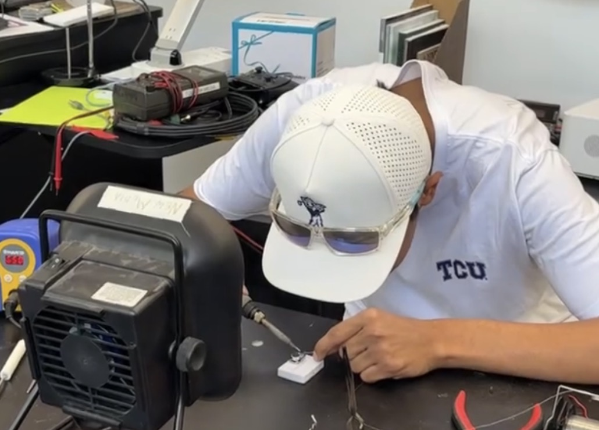

My Specialties
As a current student of TCU, my specialties are geared towards topics involving coding, data, criminal justice, and working alongside large language models.
Info On Project
This segment is to be edited at a later date with actually project descriptions since all the information that was here before describing "about me" has moved to a different page.
Highlights of Project
Similar to the above paragraph, as the semester progesses and we dive more into complex topics for different projects this segment will be filled with new information. Currently, in the active development of this project, the placeholder image here has been removed swapped with a new photo and placed higher up on the site.
My Work
Here is a collection of notable skills I have accumulated throughout the various in-class projects I have proudly created at TCU.
Skills
-
HTML
Still learning but knowledgable in generating accessible links.
-
CSS
Still learning and will begin to grow in this field in Lab 5.
-
Python
Ongoing learner but knowledgable in finding data, scraping data, and csv files for Google Collab.
-
JavaScript
Still learning and will begin to grow in this field later in the semester.
Projects
-
Personal Portfolio
This current site that you are reading. Built from scratch in HTML and CSS.
-
Digital Culture Analysis on Undertale
Created a website inspired by Toby Fox's Undertale, arguing the title and other similar games revealed characteristics of the human soul and its potential to bestow empathy. View the project on GitHub.
-
Digital Culture / Data Analysis on Star Wars: The Rise of Skywalker
Participated in a group project utilizing the Python, HTML, and CSS languages as we analyzed fan reactions to the Star Wars: Rise of Skywalker trailer before the film's release to the audience reviews after the movie released in order to understand how public opinion changed. The results we found involved the the movie being viewed negatively equally among trolls or those who argued the film was a nostalgia cash grab. View this project on GitHub.
Contact
The best way to reach me is by email.